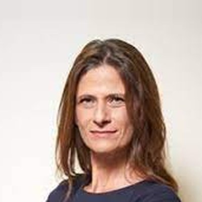

Perspectives on the Question of Antisemitism following October 7th: from Computational Sciences to the Humanities
Date:July 9, 2024
Time:9:40 (gathering) - 18:00
Location: Room -136 (adjunct to the Senate Hall, 71A on campus map)Marcus Family CampusBen-Gurion University of the NegevBe’er Sheva[Getting here]
Registration form [Attendance is free but registration is required]
To join the live stream: click here
Keynote Speaker

Michal Cotler-Wunsh
Special Ambassador for the Fight Against Anti- Semitism,
Ministry of Foreign Affairs
Program
9:40 - 10:20:
Gathering (coffee and pastries)
10:20 - 10:30:
Opening remarksDr. Oren Tsur, DPS Chair
10:30 - 12:00:
In those days, at this timeProf. Sara Offenberg, Ben-Gurion University of the Negev, “Brush up your Shakespeare”: Performing Antisemitism from the Middle Ages to the 21st centuryDr. Roni Mikel-Arieli, Ben-Gurion University of the Negev, “Holocaust Education and the Struggle Against Antisemitism in South Africa”Prof. (Emerita) Shulamit Volkov, Tel Aviv University, “The present wave of Antisemitism: A view from the Past”
12:00 - 12:40:
KeynoteMichal Cotler-Wunsh
12:40 - 12:50:
GreetingsProf. Daniel Chamovitz (BGU President)
12:50 - 13:30:
Lunch (provided)
13:30 - 14:30:
AI and social MediaDr. Matthias J. Becker, Decoding Antisemitism, TU Berlin, “Antisemitism Post-October 7th: Insights from social Media Studies”Dr. Oren Tsur, Ben-Gurion University of the Negev, “It’s context Dependent: What AI gets wrong”
14:30 - 16:00:
Liberal institutions: Europe and American CampusesProf. Sharon Pardo, Ben-Gurion university of the Negev, “October 7th and Antisemitism in Europe”Rabbi Dr. Dov Maimon, The Jewish People Policy Institute, “Is there a Jewish future in France and Belgium? Tracing our Path to the Present”Ben-Dror Yemini, The author of “Industry of Lies”, “Antisemitism in the Campuses”
16:00 - 16:10:
Coffee break
16:10 - 17:00:
Round Table: The Academic experience post October 7thProf. Michal Bar-Asher Siegal, Ben-Gurion University of the NegevDr. Yuval Pinter, Ben Gurion University of the NegevBen-Dror Yemini, The author of “Industry of Lies”
17:00 - 18:00:
Discussion groups